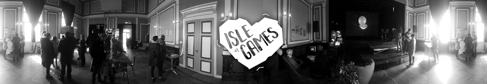

Last week, the first Isle of Games event took place. In this article, I would like to show you what we built, the works we exhibited and the performances that took place. We put in links to the artists wherever possible, and please consider supporting them in their work. Since my last article, we now have a website, and a facebook page, and a — GDPR compliant ;) — mailing list.
NB: All descriptions below are written by Torfi and Joon. The pictures are taken by Ben Gruber, and you can see the full gallery. The videos are quickly compiled from phone & amateur camera footage.
Bennett Foddy’s 2017 hit physics platformer Getting Over It with Bennett Foddy is a game about failure, frustration, and starting over. For our first performance of the night The Plague Doctor, a character by poet Ingunn Lára Kristjánsdóttir which originated at the Poetry Brothel, regaled the audience with verses of death and disease while footage of players trying (and failing) to Get Over It played it the background. The result was both melancholy and hilarious.
A 2014 first-person flash-fiction horror story by Kitty Horrorshow, CHYRZA tells the story of a band of desert dwellers who are visited by a mysterious radiating black pyramid. While playing the game live, VÆSEN — a collaboration between Baldur Helgi Snorrason and Kristian Ross — performed a dramatic reading of the in-game narration alongside an improvised score.
The 2007 first-person survival game S.T.A.L.K.E.R.: Shadow over Chernobyl is set in a world based on the one depicted by Andrei Tarkovsky in his 1979 film Stalker. This link was explored in a unique set performed by VJ Atli Bollason and musician Jesper Pedersen along with Jóhannes Sigurðsson who played the game live. Footage from the game and film were blended together using analog video mixing equipment while a score was improvised live on modular synthesizers.
For the final games performance of the night, electronic musician ÍRiiS wove her elegant combination of strings and electronic sounds into the mesmerizing environments of undersea exploration game ABZU which was played live by Fabien Dambron.
C418, Daniel Rosenfeld, played some excellent tunes that helped us find an end to this exciting but long day.
We wanted to build at least one installation that could be reused in the future and decided to build an arcade cabinet in the style of those built by Deville Arcade. The low, upward-facing screen makes it ideal for gathering around while one person plays. The control panel was built to be modular and easy to swap out with a different set of controls. For this first iteration we wanted to showcase a selection of walking simulators and built a very minimal control panel specifically for those. The design we went with is a trackball for looking around and one big button that walks forward. Additionally we added a small button on the side to exit the current game.
DJ Flugvél og Geimskip/AIRPLANE AND SPACESHIP, Steinunn Eldflaug Harðardóttir, is an electronic musician and singer who has been big in the Icelandic music scene for several years. OUR ATLANTIS is a game she is making with developer Þórður Hermannsson to accompany her new album of the same name. It invites you to explore the epic dreamworld that is the setting for this new album. We decided it needed a unique controller so we built this control panel out of an electronic children’s toy found at a second hand store.
Bitsy is a tool that allows anyone to make interactive, explorable worlds in a low-res pixel art style. It is one of the most accessible game making tools available today and really embodies the recent effort to make game making tools for everyone. It’s accessibility comes with heavy constraints in terms of what is possible to make with it but Bitsy creators have embraced those constraints and really stretched them to make some incredible experiences. The Isle of Bitsy highlighted a few of our favorite examples.
Walking, exploration, and unique narrative experiences were themes that tied many of the games at Isle of Games together. Alexander Dan Vilhjálmsson and Sigursteinn J Gunnarsson took those themes and created a completely unique experience called Vættir. Our venue, IÐNÓ, is next to a small body of water that known to us in Reykjavík simply as ‘The Pond’. It’s an important part of the city and I’ll wager it would be an impossible task to find a resident who hasn’t spent a significant amount of time walking along its shore. Vættir invites you to call a real phone number and then take this familiar walk around The Pond. The person on the other end is sensitive to sinister forces that you are not. They can see terrible things that are invisible to you. As you make your way around The Pond they will tell you what they see and try their best to keep you safe.
This project has roots in the Art + Games workshop that we did leading up to the even itself. The phone number was provided by one of our sponsors, Hringdu, a local telecom operator.
Platform is a 12 page comic by Illustrator Tom McHenry. He uses the familiar setting of the world of Mario, with floating platforms and koopa troopers, as a stage for a discussion about positive anarchy and colonialism. Even though this work is not a game itself, it combines something we know through games with another artistic medium, which made it fit in perfectly.
The Catacombs of Solaris by Ian Mclarty in many ways embodies the type of game we really wanted to celebrate at Isle of Games. It takes video game conventions and does something completely unconventional with them. It’s a unique aesthetic experience that no other medium could even come close to replicating. Vigdís Bergsdóttir and Jóhanna Ásgeirsdóttir took that aesthetic experience to a new place by projecting the game onto a large white sphere. On either side of the sphere was a projector and a controller with which to play the game. The projection gave the game a completely new feel and the interplay of the two projections on the sphere combined to create a really unique installation. This is another project that rolled out of the Art + Games workshop.
Part of our goal with Isle of Games was to provide a platform for art games in Iceland. With that goal in mind we created this pillar running three games made in Iceland that exemplify the values we wanted to highlight at Isle of Games. All selected games are first-person, made with strong aesthetic expression in mind. The creators of these games are all team members of Isle of Games.
The Choosatron, by Jerry Belich, is an interactive fiction arcade machine that prints as you play, and lets you keep your adventure when it’s finished. We acquired it quite recently, so decided to showcase it as it comes out of the box.
A one-dimensional dungeon crawler that takes place on an LED strip and is controlled with a door stopper spring. Line Wobbler is accessible but mind-blowing and was a fantastic piece to have as a part of the exhibition. The hardware occupies space in such an interesting way and really fit with our idea of mixing the conventional and the novel.
For future events, we will likely hold an open call. We have no idea when that will happen. In the meantime, please give us a shout at hello@isleofgames.is if you have any feedback, work you think we should be aware of, or have any questions about any of the things we did.
Owen, Jóa, Jói, Marín, Joon, Torfi and Sig (missing: Alexandra)
Thank you for attending, reading or supporting. The team is extremely happy with the event organization and reception, and hope we can foster this into a sustainable annual-or-other thing. Please do not hesitate to reach out to us at hello@isleofgames.is or on social media.
And finally, thanks to IÐNÓ for having us, Raw Fury and Hringdu for sponsoring, CCP for letting us borrow hardware, the Isle of Games team, and everybody who helped out especially Auður, Einar, Ewa, Kristian, Nanna, and Nathan.

written by joon on May 30, 2018